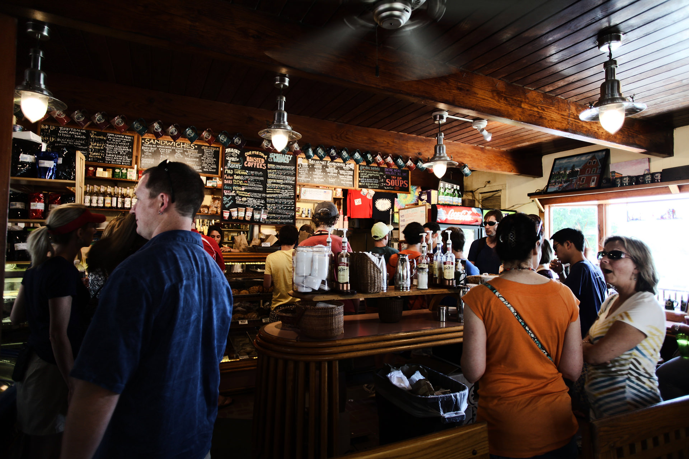

CarouselpsA responsive, cross-browser compatible, jQuery slider plugin. It's also touch-friendly, easy to use, and completely free of course. You can find it over on Github |
Browser Compatibility and AnimationsCarouselps is fully supported back to IE7. The plugin uses simple, CSS driven animations by default to ensure the best performance, with jQuery animations as fallbacks for older browsers. |
Easy to use, with room to configureAt its heart, Carouselps is incredibly simple, with only basic fade and slide transitions built in. But with callbacks available for practically every step of the transitions, you can easily add your own twist to it. |
Touch SupportCarouselps includes full touch support for the latest mobile devices, as well as touch screen Windows tablets and laptops. You can add your own twist to those animations too through the slider's callbacks, or even override them altogether! |
Details and DemosCarouselps is powering this page, and with plenty of custom options available, there's lots more you can do with it. Check out the details section for more info and examples. |
Photography courtesy of unsplash
Carouselps
- 

var defaults = {
fade: false, // use fade or slide transition mode: if true, will set continuous to false by default
continuous: true, // whether the slide loop can continuously progress in the same direction
starting_slide: 1, // the starting slide - if 0 is used, or a number greater than the number of slides, will be reset to 1
auto_slide: true, // whether or not the carousel will animate automatically
auto_direction: 'next', // auto-animate direction: 'next' or 'prev'
slide_delay: 2500, // the time interval between the carousel's auto-animations
arrow_nav: true, // control whether or not arrow navigation renders
bottom_nav: true, // control whether or not bottom navigation is used
custom_bottom_nav: false, // whether to use default or custom bottom nav - if custom, elements used must all be siblings, e.g. $('.bottom-nav > div')
use_css3: true, // if supported, control whether or not the slide transitions use css animations. Will fall back to jQuery animations in older browsers
swipe: true, // enable/disable touch swipe capability (also works for browsers on touch screen laptops, including Internet Explorer)
swipe_threshold: 100, // swipe distance (in pixels) required for slide to occur
responsive: true, // determine if the slides should alter width on resize - their width is set based on the slider's parent width
adjust_height: false, // whether or not the slider should adjust height based on the active slide - recommended for fade if not using a fixed height
adjust_height_after: false, // if adjust_height is true, whether to animate the height after the slide transition (will use the same animate_speed)
animate_speed: 500, // the animation speed between slides
preload_images: true, // whether to preload all img tags inside the slides
load_callback: function(d) {}, // when the banner has loaded
slide_start: function(d) {}, // the start of each slide transition
slide_end: function(d) {}, // the end of each slide transition
bottom_nav_click: function(d) {}, // click on bottom nav
arrow_click: function(d) {}, // arrow click
swipe_start: function(d) {}, // swipe start
swipe_move: function(d) {}, // swipe movement
swipe_end: function(d) {} // swipe end event
};